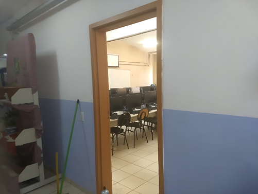
Computer lab found at the Indoor Zone
Description:
The so called "Whispers From The Poisoned Ones" can be split into Indor Zone, Outdoor Zone and Road Zone, and is listed as level , being the th level of the Backrooms.
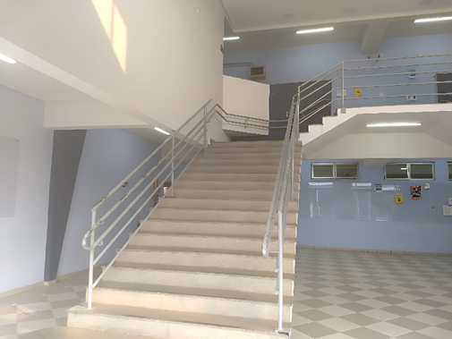
Staircase ocasionally found at the Indoor Zone

Halls at the Indoor Zone
Indoor Zone:
First zone everyone enters the level at, concists on infinitely expanding high school halls and classrooms, of wich the windows show stone pathways crossing trhough trees and bushes behind their glass when closed but literal mouth interiors when opened.
Staircase ocasionally found at the Indoor Zone
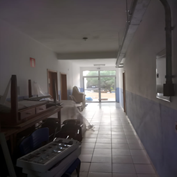
Entrence to the Outdoor Zone
Outdoor Zone:
Entered from a door found at the Indoor Zone from wich sunlight is coming in regardless if it is night or day time, for the Outdoor Zone does have day and night cicle, though being the only zone in this level to do so. It stays day for eight hours and night for 16, and switches like a light bulb interuptor was being pressed.
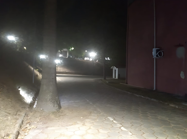
Parked car photographed during daytime
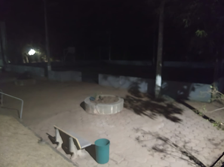
Court found in the Outdoor Zone
When it comes down to apearence, the Outdoor Zone is a mishmash of stone and concrete paths crossing trough grass flats, bushes and trees, many structures being at the side or end of those winding paths: stalrooms, cafeterias and table field areas those being, as well as eventual larger structures with doors that take back into the Indoor Zone.
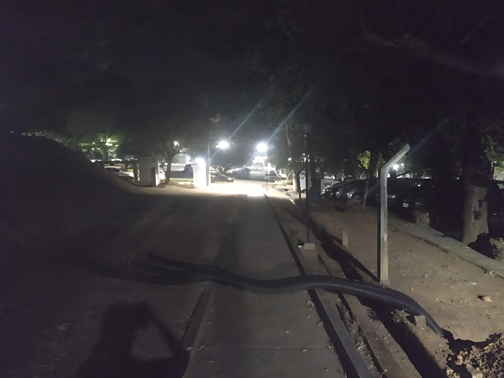
Parked car photographed during nighttime
Entrence to the Road Zone
Road Zone:
Entered from an exit gate found at the Outdoor Zone, looks to be the road this high school students would drive trough to return their homes after studing, but it does not have a noticeble astral at the sky, only some very small white dots that do not light anything at all. The posts, on the other side, do light the way ahed of you with their orange artificial lamps.
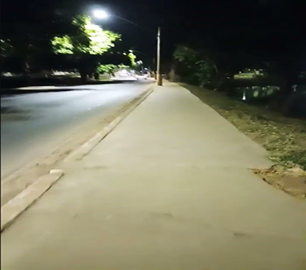
Photograph taken in the Road Zone
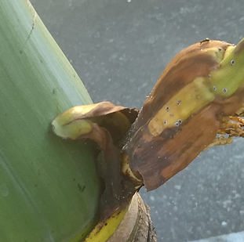
Anomalous ant nest photographed from above
Anomalous ants
Trees at the outdoor area might present a strange kind of nest that looks like one of its sticks has been torn, and a big tipe of ant inhabitating inside. Though not doing the same when walking on ground, it has shon tendency to bite humans who touch the trees they are on, that way injecting a very enigmatic substance, responsible for turning the victims into the next entity of the list.
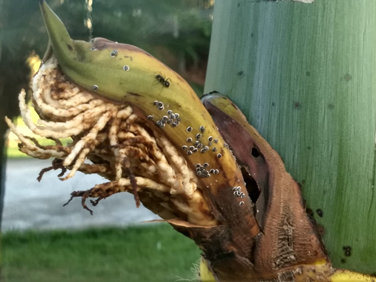
Sideway photo by the same M.E.G. operative
Poisoned One from up close
The Poisoned Ones
Over the corse of a week or so, poison from these ants turn pale the human skin, makes their hair look like coal made cabels and their eyes assume the color of blood, and shine, due to a chamical reaction between the poison and the proteins responsible for the volotile flys. Those who have alrery lost their minds due to the poison now lurk trough the shadows of empty roads and dark rooms, hidding during day time to sleep. When seeing a human, they are going to follow them from a far. If the followed has yet not seen the entitys, they are going to tell them frases along the line of "How? How am I not about to be atacked by something that jumps from the shadows?" and "I is not possible, I can't be alone in this place..." with a misterius voice that apears to be coming from the had of the listener themself, with people usually not even considerating the possibility of an exterior source. If a person sees one of those entitys, last stop using this etherial voice, proceding to scare first by lurking right at the edges of their view field, usually in dark areas. Many people become wreches because the fear of those lurkers prevents them from sleeping, and, in some cases, even from drinking the almond water they could get from the fountains and randomly placed bottles that are around this level by scarering them away from those things. It is not known if the poison prevents the wreched cicle and provides hunger and thursty imunity or if evry person it turns into a scary ghost is doomed to become a wrech as well as all the victims they scared, but sights of them eating dead people and entitys have been reported to M.E.G..
Poisoned One from a far
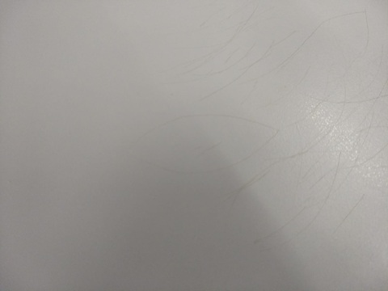
Photograph angle one
Table Eyes
Major Explorer Group estimates 10% to be the amount of tables found in this level's classrooms that have those eye drowings made with sisors on them. Should those be aprouched, orange light comes out of those drowings' pupils, as well as a high and anoing sound. If that who aprouched the table does not run away at this point, the eye blasts a powerfull wind wave on their direction, removing a centimiter from the celing's material upon full doging.
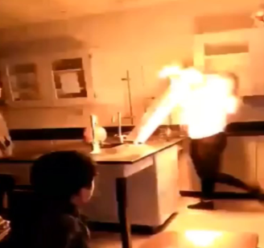
Photograph angle two